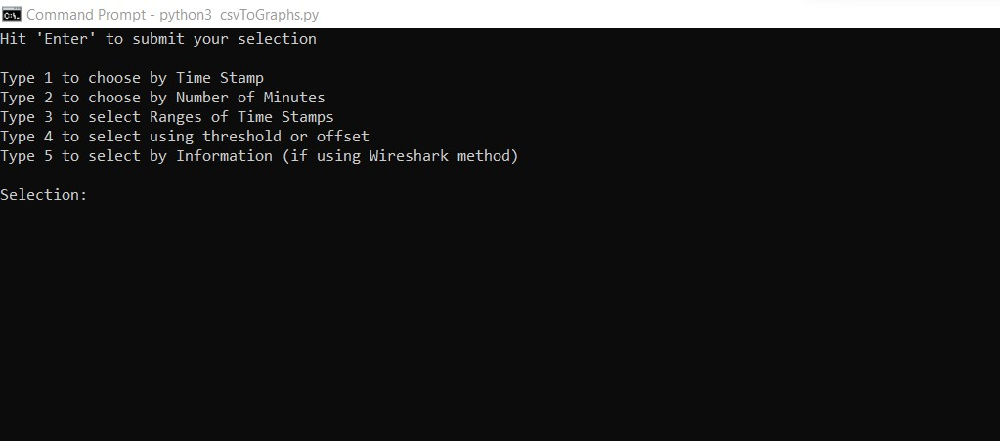

CSV to Graphs
Python Executable
As the lead developer, I developed this program using Python.

Description
The CSVtoGraphs Python Executable is a post-processing program I developed to visualize KPI, throughput, and ping statistics as a graphical support aid. This program obtains the data collected from the Google Chrome Extension I previously created, and can display that data based on a user's needs. The Python Executable uses the numpy and matplotlib libraries to both parse the information as needed, and to display the correct information to the user.
NEED PICS OF COMMANDLINE, OPTIONS, OUTPUT
Languages
Backend: React, Typescript, Javascript, MongoDB, JWT